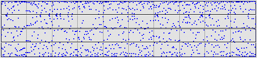

For a sample we take 1000 iterates of the
|  |
We shall explore how bin choices and differences affect what can be deduced from the driven IFS plot.
| Equal-size bins |
| Equal-weight bins |
| One-step differences: equal-size bins |
| One-step differences: equal-weight bins |
| One-step differences: zero-centered bins |
Return to Data Analysis by Driven IFS.